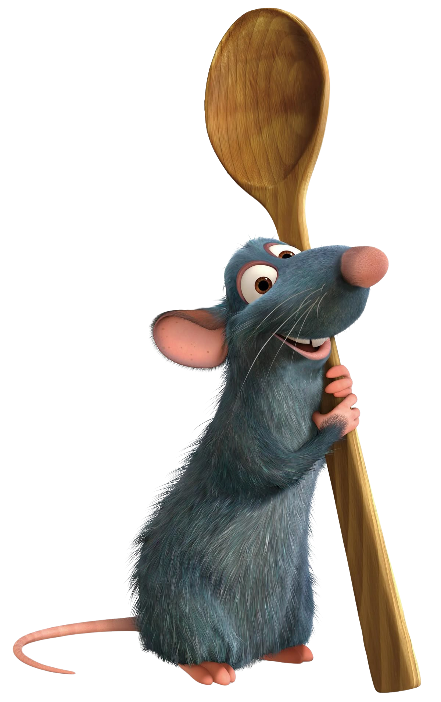

Bem-vindo ao restaurante do Remy
Um bistrô temporário de inspiração francesa, criado para impressionar com elegância, cinema e ciência. Aqui, sabor, memória e apresentação se encontram em uma experiência refinada inspirada no universo de Ratatouille.
Receitas inspiradas no filme Ratatouille
Ingredientes: abobrinha, berinjela, tomate, cebola, alho, molho de tomate, azeite, sal e ervas finas.
“Cozinhar é transformar simplicidade em encanto.”
Ingredientes: cebola, manteiga, caldo, pão e queijo.
“Os melhores aromas falam antes da primeira colherada.”
Ingredientes: peixe, camarão, alho, tomate, ervas, caldo e especiarias.
“Um prato marcante transforma jantar em memória.”
Ingredientes: massa folhada, maçãs, açúcar, manteiga e canela.
“A confeitaria francesa conquista primeiro os olhos, depois o coração.”
A gastronomia impressiona porque ativa vários sistemas do corpo ao mesmo tempo. Sabor, aroma, visão e memória trabalham juntos para criar experiências intensas e inesquecíveis.
A língua reconhece doce, salgado, azedo, amargo e umami. Esses sinais são enviados ao cérebro, que começa a interpretar o alimento.
Grande parte do que chamamos de sabor vem do olfato. Por isso, alimentos aromáticos parecem mais ricos, complexos e marcantes.
Um prato bonito faz o cérebro antecipar prazer. Cor, brilho, organização e contraste visual influenciam diretamente nossa percepção de qualidade.
Certos sabores despertam lembranças e sentimentos. Isso acontece porque áreas cerebrais ligadas ao olfato também se conectam com emoção e memória.